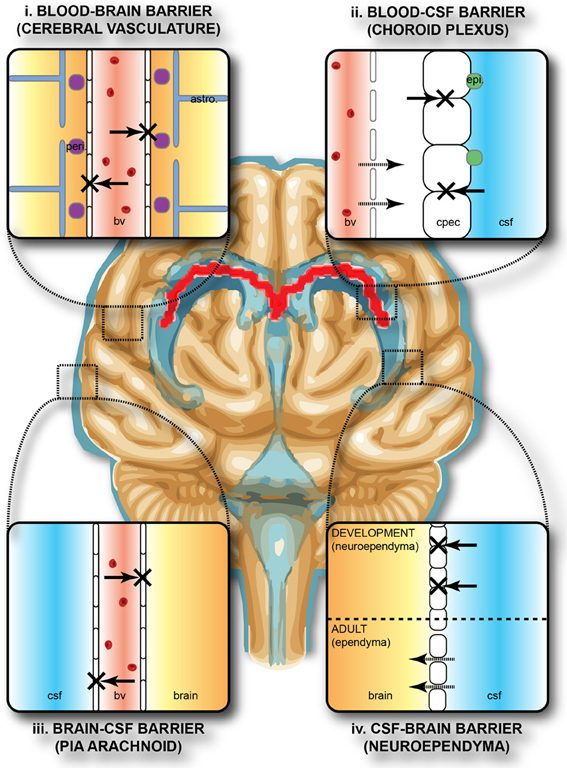

Un muro selectivo
La barrera hematoencefálica separa la sangre del tejido cerebral y decide qué puede pasar y qué no. Protege al cerebro de toxinas, microbios y cambios bruscos en la composición de la sangre, y mantiene el medio químico estable que las neuronas necesitan para funcionar. Su existencia la intuyó Paul Ehrlich a finales del siglo XIX: al inyectar un colorante azul en la sangre de animales, todos los órganos se teñían excepto el cerebro. Su discípulo Edwin Goldmann hizo lo contrario: inyectado en el líquido cefalorraquídeo, el colorante teñía solo el cerebro.
De qué está hecha
En casi todo el cuerpo, los capilares tienen pequeños poros entre sus células por los que pasan sustancias libremente. En el cerebro no. La barrera la forman:
| Componente | Papel |
|---|---|
| Células endoteliales de los capilares | Unidas por uniones estrechas que sellan los espacios entre ellas |
| Pericitos | Rodean los capilares, regulan el flujo y mantienen la barrera |
| Astrocitos | Envuelven los vasos con sus «pies» y la inducen (glía) |
| Membrana basal | Capa de sostén |
Juntos forman la unidad neurovascular.
Qué pasa y qué no
- Pasan fácilmente: el oxígeno, el dióxido de carbono y las sustancias pequeñas y solubles en grasa, como el alcohol, la nicotina, la cafeína, los anestésicos y muchos psicofármacos.
- Pasan con transportadores específicos: la glucosa, los aminoácidos, algunas vitaminas. La levodopa usa el transportador de aminoácidos, por eso las comidas ricas en proteínas pueden reducir su efecto. Ver levodopa.
- No pasan: la mayoría de las bacterias, las proteínas grandes, los anticuerpos (solo un 0,1 % llega al cerebro), muchas toxinas y la mayoría de los fármacos grandes.
- Además, la barrera tiene bombas de expulsión (como la glicoproteína P) que devuelven a la sangre sustancias que han conseguido entrar.
Algunas pequeñas zonas del cerebro no tienen barrera (los órganos circunventriculares), porque necesitan «muestrear» la sangre: por ejemplo, el centro del vómito detecta toxinas, y partes del hipotálamo detectan hormonas.
Un reto para los tratamientos
Se calcula que más del 98 % de los fármacos pequeños y casi todos los grandes no atraviesan la barrera. Es uno de los grandes obstáculos para tratar las enfermedades neurológicas. Algunas estrategias:
- Administrar el fármaco directamente en el líquido cefalorraquídeo, como el nusinersen en la atrofia muscular espinal. Ver terapias génicas y de ARN.
- Virus modificados (AAV9) capaces de cruzarla, usados en terapia génica.
- Moléculas «caballo de Troya» que se unen a receptores del transporte (como el de la transferrina) para entrar.
- Ultrasonido focalizado con microburbujas, que abre la barrera de forma temporal y localizada.
- Los anticuerpos antiamiloide usados en el alzhéimer entran en muy poca cantidad, por eso se dan en dosis altas. Ver anticuerpos antiamiloide.
Cuando la barrera se rompe
La barrera se altera en muchas enfermedades, lo que contribuye al daño:
- Esclerosis múltiple: las células inmunitarias la cruzan y atacan la mielina. Las lesiones activas «captan» el gadolinio en la resonancia porque la barrera está abierta. Algunos tratamientos, como el natalizumab, actúan impidiendo que los linfocitos la atraviesen.
- Ictus: la rotura de la barrera produce edema y aumenta el riesgo de sangrado tras la trombólisis.
- Meningitis y encefalitis: los microbios la cruzan; la inflamación la abre, lo que permite que lleguen los antibióticos.
- Tumores cerebrales: los vasos del tumor son anormales y captan contraste; pero la barrera dificulta la quimioterapia.
- Alzhéimer y envejecimiento: la barrera se vuelve más permeable, sobre todo en el hipocampo.
En los recién nacidos
La barrera ya funciona al nacer, pero es más inmadura. Por eso la bilirrubina muy alta en los recién nacidos puede dañar el cerebro (kernícterus), y hay que vigilar la ictericia del bebé.
Fuentes
- Abbott NJ, et al. Structure and function of the blood-brain barrier. Neurobiol Dis. 2010;37:13-25.
- Pardridge WM. The blood-brain barrier: bottleneck in brain drug development. NeuroRx. 2005;2:3-14.
- Sweeney MD, et al. Blood-brain barrier breakdown in Alzheimer disease and other neurodegenerative disorders. Nat Rev Neurol. 2018;14:133-50.
- Lipsman N, et al. Blood-brain barrier opening in Alzheimer's disease using MR-guided focused ultrasound. Nat Commun. 2018;9:2336.